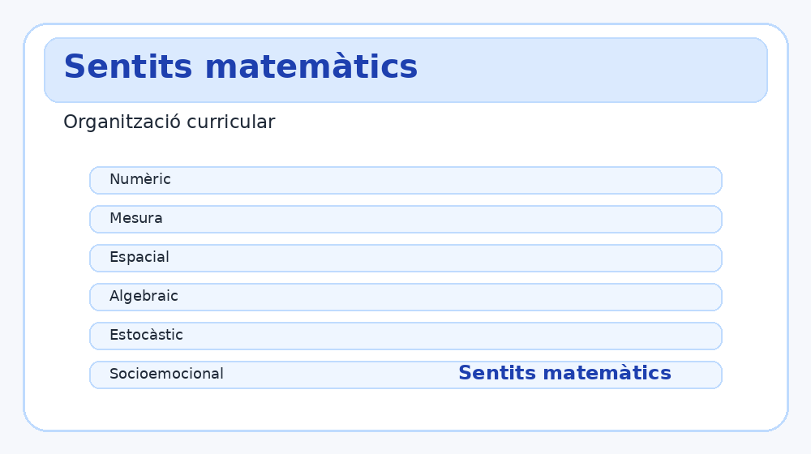

Situacions diferents segons curs
Aquesta versió organitza les SA per 1r, 2n, 3r i 4t d’ESO, amb nivells de càlcul, representació, modelització i decisió.
eina educativa
Situacions d’aprenentatge per curs, càlcul guiat, mode docent, rúbrica i exportació PDF visual.
Aquesta versió organitza les SA per 1r, 2n, 3r i 4t d’ESO, amb nivells de càlcul, representació, modelització i decisió.

Cada SA inclou competències, criteris, sabers codificats, rúbrica imprimible i informe visual exportable a PDF.
Situacions d’aprenentatge
Tria curs, situació i nivell. Les dades són editables i el resultat inclou procediment i connexió curricular.

Eines ràpides
Petites eines de suport per a càlculs freqüents.
Mode docent
Genera una fitxa docent numerada i imprimeix la rúbrica.

Reflexió
Tria una situació o una eina per començar.